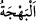
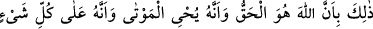
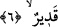

beraber başka bir şey bulunmadığına, dilediği şeyi dilediği halde yaratmaya kâdir
olduğuna delâlet etmektedir. Fakat ezelî irâde, ezelî hikmet ile âlemin varlığından önce
‘vakit’ olmasa da âlem çocuğunun vakti geldiği zaman adem rahminden çıkarılması için
belirlenmiş bir süre olmasını gerekli kılmıştır. Ancak bu vaktin mikdârı, sabahı ve
akşamı olmayan Allah’ın günleri içindedir. Nitekim Allah Teâlâ “Onlara Allah’ın
günlerini hatırlat.” (İbrâhim, 14/5) buyurmuştur.
“Sonra sizi bir bebek olarak dışarı çıkarırız…” ifâdesi işâret etmektedir ki
mükevvenâtın çocuklarından her bir çocuk adem rahminden terbiyeye istîdadlı olarak
çıkarılır. Onun tedricen ulaşacağı bir kemâli vardır. Mükevvenâttan öylesi vardır ki
kemâline ulaşmadan önce yok olur. Yine öylesi vardır ki kemâlinin sınırına ulaşır ve
geçer, sonra da kendisinde kemâl vasıflarından hiçbir şey kalmaması için kemâlin
zıddına dönüp varır. İşte “ta ki bilen bir kimse olduktan sonra bir şey bilmez hale
gelsin” sözünün mânâsı budur.
Benim ilim defterimi tamamen meyle/şarapla yıkayınız ki
Feyz-i ezelî olan nemden canım dirilik bulsun
Ey şânı görmek olan kimse “Sen, yeryüzünü de kupkuru ve ölü bir halde görürsün;
fakat biz, üzerine su” yâni yağmur “indirdiğimizde o, kıpırdanır,” bitkilerle harekete
geçer “kabarır” şişer ve artar “ve her çeşitten (veya çiftten) iç açıcı” bakanı
sevindiren parlak ve güzel, tazelik, canlılık, iyilik ve güzellik artırıcı “bitkiler verir.” “__WORD__ renk güzelliği ve kendisinde sevincin zuhur etmesidir. Ölmüş olan yeryüzünü su
ile diriltip canlandıran Kâdir-i mutlak Allah, ölünün parçalarını eski hâlinde toplayıp
geri döndürmeye muktedirdir.
Tane ve tohum olmaksızın fidan çıkaran Hak Teâlâ
Taneyi de ağaç yapmaya kadirdir
Olmamış olanı kudreti ile var etmiştir
O hâlde önceden var olana yeniden vücut vermesine şaşmamalı
İşte bu husus tekrar diriltme konusunda başka bir delildir.
6. Çünkü Allah hakkın ta kendisidir; O, ölüleri diriltir; yine O, her şeye hakkıyla
kadirdir.
“Çünkü Allah hakkın ta kendisidir;” Bu güzel ve eşsiz san’at, yâni insanın türlü